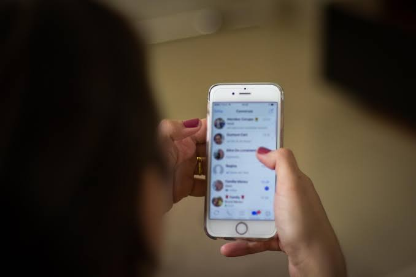

Sempre conectado

A WVT-Tech é uma startup que busca mudar a maneira de conectar as pessoas.
Nosso aplicativo móvel é construído para criar e aumentar as conexões entre você, pessoas que conhece e pessoas que você quer conhecer. Com várias startups em nosso portfólio, a equipe da Netric está trabalhando para trazer a você tudo em um único aplicativo.
Conecte com amigos
Use a WVT para se conectar às pessoas que você conhece.
A WVT pode conectar você a pessoa fora de seu circulo habitual.

Mantenha contato
O sistema de mensagem da WVT substitui a mensagem de texto, a chamada e a mensagem de voz.
Nossos fóruns irão mudar a maneira como você lida com grupos de interesses e debates virtuais.
Construa sua base social
A WVT apresenta ideias e espaços que podem deixar você interessado.
Você pode usar esses espaços para conhecer novas pessoas e criar conexões.
